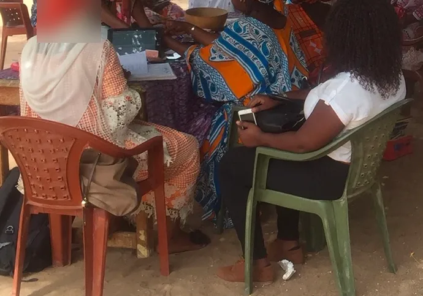
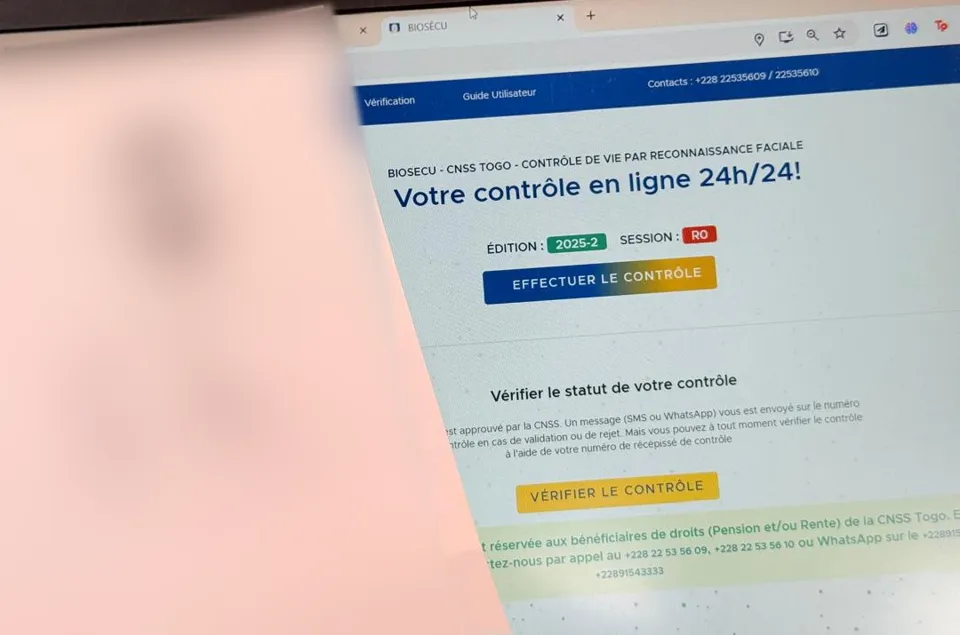

Nous réduisons la fracture numérique au Togo en donnant accès à l'internet, aux outils et aux compétences essentielles aux populations en situation de précarité.
Retraités et pensionnaires de la CNSS : le contrôle de vie concerne le versement de votre pension. Voici la prochaine période.
Dates à confirmer auprès de la CNSS avant de vous déplacer.
Les M@JUSCULES est une association apolitique, laïque et à but non lucratif dédiée à la lutte contre l'exclusion numérique au Togo.
Depuis sa création en 2023, nous travaillons pour permettre aux personnes en situation de précarité sociale et numérique d'accéder aux outils en ligne devenus indispensables à la vie quotidienne.
Être coupé d'internet aujourd'hui, c'est être exclu des services essentiels, s'éloigner du retour à l'emploi et du lien social.
Nous travaillons sur trois aspects clés de la précarité numérique :
Accès au matériel
Équipements informatiques et connectivité
Accès à la connexion
Internet à bas coûts et fiable
Compétences essentielles
Formation et accompagnement
Nous luttons à réduire la fracture numérique et énergétique et aider les personnes fragiles à l'autonomie digitale (accès et utilisation) dans une société en voie de dématérialisation complète.
Co-construire ensemble un environnement d'inclusion numérique au Togo où chacun peut participer pleinement à la vie économique, sociale et citoyenne.
Fournir des ordinateurs, smartphones et tablettes aux populations fragiles
Faciliter l'accès à internet fiable et abordable
Accompagner vers les compétences numériques essentielles
Avant la création officielle de l'association, nous accompagnions déjà des seniors dans leurs démarches numériques. Voici deux de ces actions.


Ces actions ont été menées avant la création officielle de l'association. Les visages et les documents personnels ne sont pas visibles.
Une session de formation pratique pour initier 100 jeunes à l'utilisation d'outils numériques et de gestion en ligne.
Plus de 200 ordinateurs portables reconditionnés ont été remis à des écoles rurales pour renforcer l'éducation numérique.
Des agents municipaux ont été formés à l'administration électronique et à l'usage d'outils de gestion numérique.
Ordinateurs portables, smartphones ou tablettes en bon état (moins de 5 ans) pour équiper nos bénéficiaires
Nous contacterVos dons nous permettent de financer les formations et le matériel pour les populations en situation de précarité
Faire un donPartager vos compétences en informatique, enseignement ou logistique pour accompagner notre mission
Devenir bénévoleChaque don finance du matériel, de la connexion et des formations pour des personnes en situation de précarité numérique au Togo.
Numéro de réception
+228 98 56 19 01
Vous avez envie de contribuer à l'inclusion numérique au Togo ? Inscrivez-vous et nous vous contacterons rapidement.
Nous l'avons bien reçue et nous vous recontacterons par email ou WhatsApp dans les 48h.
Soutenir l'association15 Rue Ouma, Hanoukopé
Lomé, TOGO
Que vous soyez jeune ou moins jeune, entrepreneur, professionnel de l'IT ou simplement passionné par l'inclusion numérique, il y a un rôle pour vous chez Les M@JUSCULES.
Ensemble, nous pouvons vraiment faire la différence pour les populations les plus vulnérables du Togo.
S'Engager Maintenant